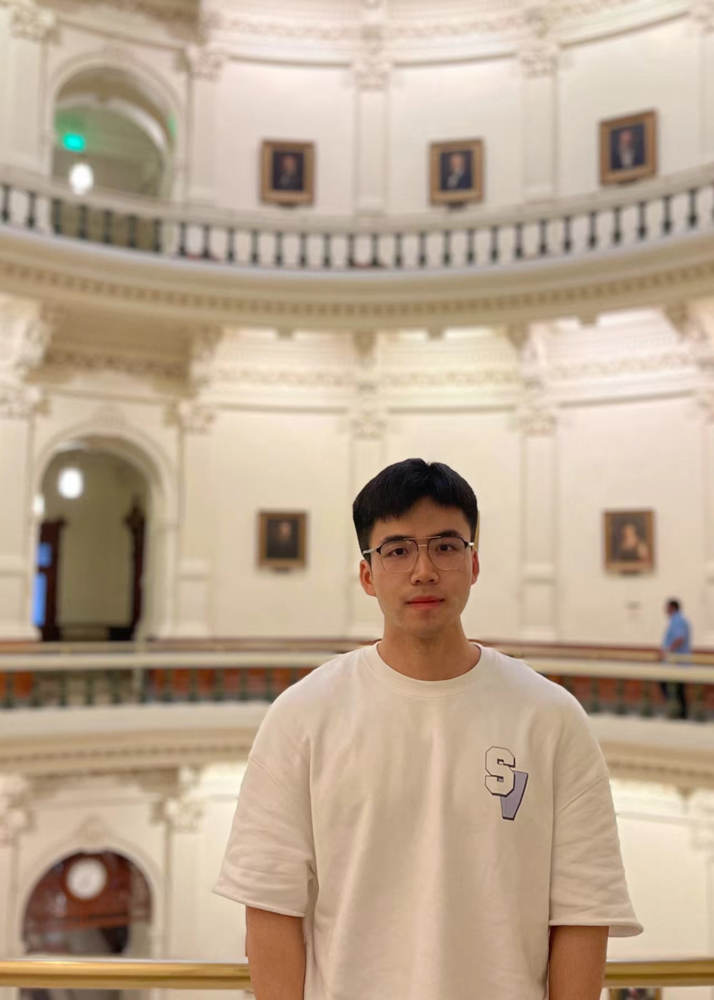

News
26 Jan 2026
Two papers are accepted by ICLR'26 on LLM reasoning and alignment.
10 Dec 2025
One paper is accepted by AAAI'26 on LVLM hallucination.
18 Sep 2025
One paper is accepted by NeurIPS'25 on LLM alignment.
21 Aug 2025
One paper is accepted by EMNLP'25 on Auction Agent.
15 May 2025
One paper is accepted by ACL'25 on DPO.
1 May 2025
Four full papers are accepted by ICML'25 on LLM and MLLM alignment.
3 Jan 2025
One full paper is accepted by ICLR'25 on alignment.
26 Sep 2024
One full paper is accepted by NeurIPS'24 on alignment.
20 Sep 2024
One full paper is accepted by EMNLP'24 on agent.
02 Feb 2024
One full paper is accepted by WWW'24 on recommendation.
30 Nov 2023
Two full papers are accepted by ICDE'24 on recommendation and Graph.
22 Sep 2023
One full paper is accepted by NeurIPS'23 on Contrastive Learning.
20 April 2023
One full paper is accepted by IJCAI'23 on invariant learning for unbiased recsys.
26 Jan 2023
Two full papers are accepted by WWW'23 on recsys.
08 Aug 2021
One full paper is accepted by CIKM'21 on knowledge graph.
|  |
Junkang Wu
PhD student
Lab of Data Science 443 Huangshan Road, Hefei, China 230027
Advisor: Prof. Xiang Wang |

I am currently in the 4th year of my PhD program at USTC Lab for Data Science, supervised by Prof. Xiang Wang and Prof. Xiangnan He.
My research focuses on advancing large language models (LLMs) through post-training techniques, with particular emphasis on improving reasoning capabilities and robustness.
I am on the job market for 2026! Please reach out if you think I could be a fit for your institution or organization!
I am on the job market for 2026! Please reach out if you think I could be a fit for your institution or organization!
Education
|
University of Science and Technology of China (USTC) PhD Candidate in Cyberspace Security 2021.09 - 2026.06 (Expected) Advisor: Prof. Xiang Wang and Prof. Xiangnan He |
|
Zhejiang University of Technology (ZJUT) Bachelor in School of Computer Sciences 2017.09 - 2021.06 Advisor: Prof. Jianping Mei |
Publications
In the Year of 2026:
 |
Quantile Advantage Estimation for Entropy-Safe Reasoning Junkang Wu, Kexin Huang, Jiancan Wu, An Zhang, Xiang Wang, Xiangnan He ICLR 2026 (Full, Accept Rate: 28%) [PDF] [Codes] |
|
On the Direction of RLVR Updates for LLM Reasoning: Identification and Exploitation Kexin Huang, Haoming Meng, Junkang Wu, Jinda Lu, Chiyu Ma, Ziqian Chen, Xue Wang, Bolin Ding, Jiancan Wu, Xiang Wang, Xiangnan He, Guoyin Wang, Jingren Zhou ICLR 2026 (Full, Accept Rate: 28%) [PDF] |
|
Causal-HalBench: Uncovering LVLMs Object Hallucinations Through Causal Intervention Zhe Xu, Zhicai Wang, Junkang Wu, Jinda Lu, Xiang Wang AAAI 2026 [PDF] |
In the Year of 2025:
|
RePO: ReLU-based Preference Optimization Junkang Wu, Kexin Huang, Xue Wang, Jinyang Gao, Bolin Ding, Jiancan Wu, Xiangnan He, Xiang Wang NeurIPS 2025 (Full, Accept Rate: 24.52%) [PDF] [Codes] |
|
LaMP-Val: Large Language Models Empower Personalized Valuation in Auction Jie Sun, Tianyu Zhang, Houcheng Jiang, Kexin Huang, Xiang Shu, Zhibo Zhu, Lintao Ma, Xingyu Lu, Jun Zhou, Junkang Wu, Chi Luo, An Zhang, Jiancan Wu*, Xiang Wang EMNLP 2025 (Findings) [PDF] |
|
Robust Preference Optimization via Dynamic Target Margins Jie Sun, Junkang Wu, Jiancan Wu, Zhibo Zhu, Xingyu Lu, Jun Zhou, Lintao Ma, Xiang Wang ACL 2025 (Findings) [PDF] [Codes] |
|
AlphaDPO: Adaptive Reward Margin is What Direct Preference Optimization Needs Junkang Wu, Xue Wang, Zhengyi Yang, Jiancan Wu, Jinyang Gao, Bolin Ding, Xiang Wang, Xiangnan He ICML 2025 (Full, Accept Rate: 26.9%) [PDF] [Codes] |
|
Larger or Smaller Reward Margins to Select Preferences for Alignment? Kexin Huang, Junkang Wu, Ziqian Chen, Xue Wang, Jinyang Gao, Bolin Ding, Jiancan Wu, Xiangnan He, Xiang Wang ICML 2025 (Full, Accept Rate: 26.9%) [PDF] [Codes] |
|
DAMA: Data- and Model-aware Alignment of Multi-modal LLMs Jinda Lu, Junkang Wu, Jinghan Li, Xiaojun Jia, Shuo Wang, YiFan Zhang, Junfeng Fang, Xiang Wang, Xiangnan He ICML 2025 (Full, Accept Rate: 26.9%) [PDF] [Codes] |
|
MM-RLHF: The Next Step Forward in Multimodal LLM Alignment YiFan Zhang, Tao Yu, Haochen Tian, Chaoyou Fu, Peiyan Li, JianshuZeng, Wulin Xie, Yang Shi, Huanyu Zhang, Junkang Wu, Xue Wang, Yibo Hu, Bin Wen, Tingting Gao, Zhang Zhang, Fan Yang, Di ZHANG, Liang Wang, Rong Jin ICML 2025 (Full, Accept Rate: 26.9%) [PDF] [Codes] |
|
Towards Robust Alignment of Language Models: Distributionally Robustifying Direct Preference Optimization Junkang Wu, Yuexiang Xie, Zhengyi Yang, Jiancan Wu, Jiawei Chen, Jinyang Gao, Bolin Ding, Xiang Wang, Xiangnan He ICLR 2025 (Full, Accept Rate: 32.08%) [PDF] [Codes] |
In the Year of 2024:
|
β-DPO: Direct Preference Optimization with Dynamic β Junkang Wu, Yuexiang Xie, Zhengyi Yang, Jiancan Wu, Jinyang Gao, Bolin Ding, Xiang Wang, Xiangnan He NeurIPS 2024 [PDF] [Codes] |
|
Direct Multi-Turn Preference Optimization for Language Agents Wentao Shi, Mengqi Yuan, Junkang Wu, Qifan Wang, Fuli Feng EMNLP 2024 [PDF] |
|
Lower-Left Partial AUC: An Effective and Efficient Optimization Metric for Recommendation Wentao Shi, Wang Chenxu, Fuli Feng, Yang Zhang, Wenjie Wang, Junkang Wu, Xiangnan He WWW 2024 (Full, Accept Rate: 20.2%) [PDF] [Codes] |
|
BSL: Understanding and Improving Softmax Loss for Recommendation Junkang Wu, Jiawei Chen, Jiancan Wu, Wentao Shi, Jizhi Zhang, Xiang Wang ICDE 2024 (Full) [PDF] [Codes] |
|
Masked Graph Modeling with Multi-View Contrast Yanchen Luo, Sihang Li, Yongduo Sui, Junkang Wu, Jiancan Wu, Xiang Wang, Xiangnan He ICDE 2024 (Full) |
In the Year of 2023:
|
Understanding Contrastive Learning via Distributionally Robust Optimization Junkang Wu, Jiawei Chen, Jiancan Wu, Wentao Shi, Xiang Wang, Xiangnan He NeurIPS 2023 (Full, Accept Rate: 26.1%) [PDF] [Codes] [Slides] [知乎] |
|
Adap-τ: Adaptively Modulating Embedding Magnitude for Recommendation Jiawei Chen*, Junkang Wu*, Jiancan Wu, Sheng Zhou, Xuezhi Cao, Xiangnan He WWW 2023 (Full, Accept Rate: 19.2%) [PDF] [Codes] [Slides] [知乎] * Co-first author |
|
On the Theories Behind Hard Negative Sampling for Recommendation Wentao Shi, Jiawei Chen, Fuli Feng, Jizhi Zhang, Junkang Wu, Chongming Gao, Xiangnan He WWW 2023 (Full, Accept Rate: 19.2%) [PDF] [Codes] [Slides] |
|
Discriminative-Invariant Representation Learning for Unbiased Recommendation Hang Pan, Jiawei Chen, Fuli Feng, Wentao Shi, Junkang Wu, Xiangnan He IJCAI 2023 (Full, Accept Rate: 15.0%) [PDF] [Codes] |
In the Year of 2021:
|
DisenKGAT: Knowledge Graph Embedding with Disentangled Graph Attention Network Junkang Wu, Wentao Shi, Xuezhi Cao, Jiawei Chen, Wenqiang Lei, Fuzheng Zhang, Wei Wu, Xiangnan He CIKM 2021 (Full, Accept Rate: 21.3%) [PDF] [Codes] [Slides] [知乎] |
Experiences
| Research Intern as TopSeed, ByteDance Seed, Hangzhou, May 2025 - Present Mentor: Shuangzhi Wu |
| Research Intern, Alibaba Tongyi Lab, Hangzhou, Oct 2023 - April 2025 Mentor: Yuexiang Xie, Xue Wang, Jinyang Gao |
| Research Intern, Meituan NLP Group, Beijing, Aug 2020 - Aug 2021 Mentor: Xuezhi Cao, Fuzheng Zhang |
Honors
|
National Scholarship, 2024.12 - University of Science and Technology of China |
|
National Scholarship, 2021.12 - University of Science and Technology of China |
|
Outstanding Graduate, 2021.06 - Zhejiang Province |
|
National Scholarship, 2019.12 - Zhejiang University of Technology |
Useful Links
| Machine Learning Reading List |
| Deep Learning Reading List |

Webpage template borrows from Xiangnan He.